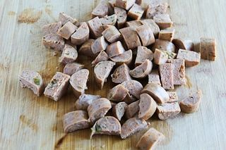
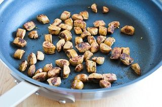
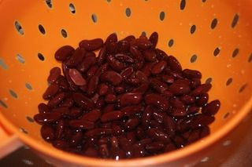
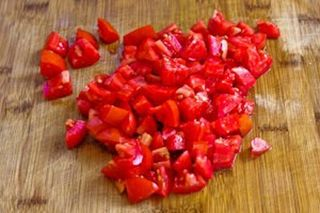
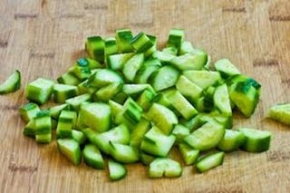
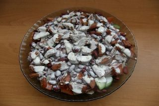

Шаг 1: подготавливаем сосиски.

Для начала снимаем с сосисок оболочку, кладем их на разделочную доску и режем поперек кольцами толщиной в 1 сантиметр. Дальше действуем по желанию – разрезаем колечки на 2 или 4 части и оставляем нарезку на доске.
Шаг 2: обжариваем сосиски.
Теперь ставим на средний огонь сковороду, вливаем в нее столовую ложку растительного масла и через несколько минут опускаем в него нарезанные сосиски.

Обжариваем их до легкого золотистого цвета или до коричневого румянца, кто как любит. Во время жарки не отвлекаемся, интенсивно помешиваем кусочки колбасных изделий кухонной лопаткой, для того чтобы они не подгорали и не прилипали к сковороде.
После того как сосиски обжарятся, выкладываем их в глубокую салатницу и остужаем, а тем временем начинаем подготавливать остальные ингредиенты.
Шаг 3: подготавливаем остальные продукты.

С помощью ключа для консервов открываем баночку с фасолью и перекладываем ее содержимое в глубокий дуршлаг, предварительно установленный в мойке. Оставляем в нем фасоль до момента использования, для того чтобы стекли остатки маринада.

Затем тщательно промываем под холодной проточной водой помидоры, огурец и салатные листья. После этого сушим их бумажными кухонными полотенцами, по очереди кладем на разделочную доску и измельчаем. У каждого помидора срезаем место, на котором крепилась плодоножка, и режем их дольками или четвертинками.

Огурец нарезаем так же, как сосиски – кольцами, а затем полукольцами или четвертинками. Салатные листики шинкуем или просто разрываем их руками на более мелкие кусочки.
Шаг 4: доводим салат до полной готовности.

Все подготовленные овощи и салатные листья перекладываем в емкость с обжаренными сосисками. Туда же добавляем по вкусу соль, красный молотый перец и майонез. С помощью столовой ложки перемешиваем все составляющие салата до однородной консистенции и подаем его к столу.